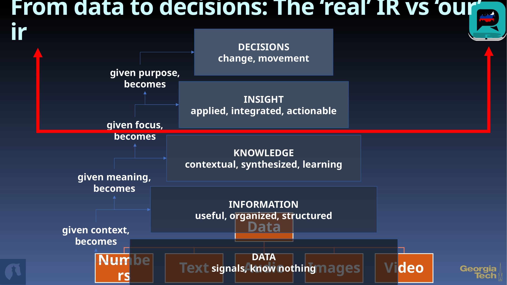
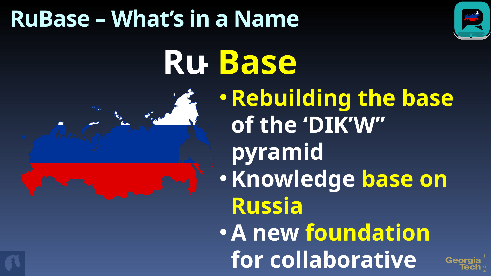
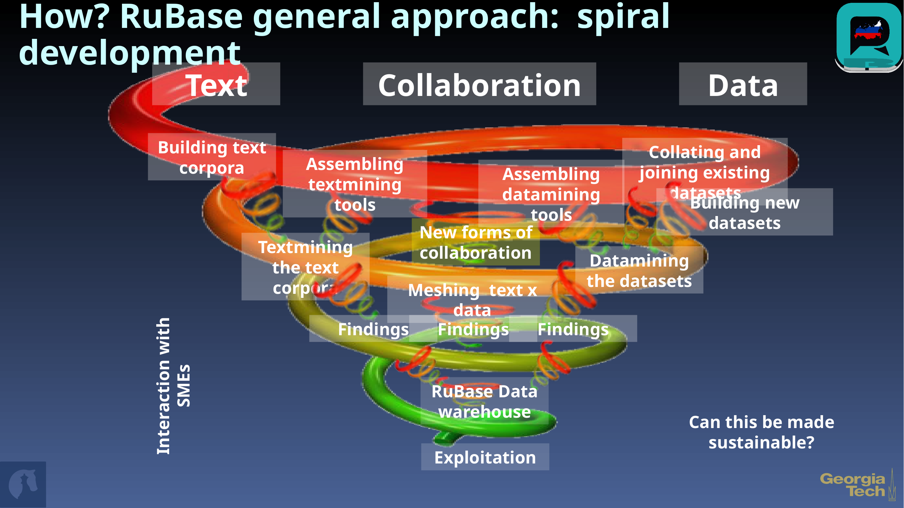
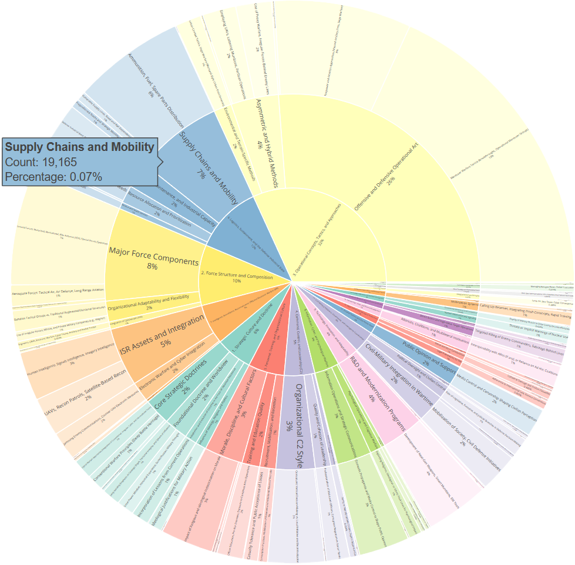
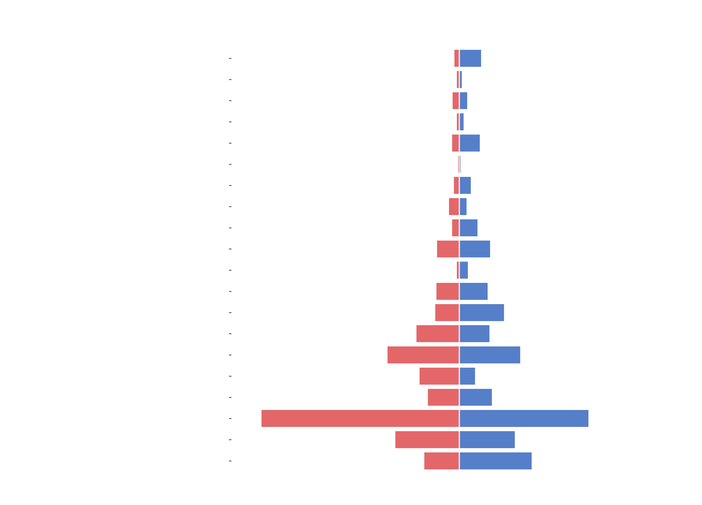
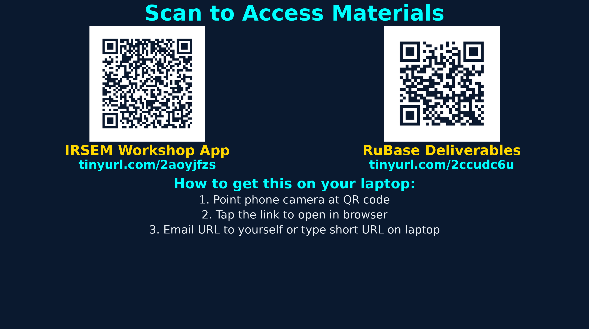

Decoding Russian Military Power Through Computational Intelligence
Stephan De Spiegeleire (HCSS) & Adam Stulberg (Georgia Tech)
IRSEM Paris | March 27, 2026
We need a bridge between the scholarly corpus and the policy world.



3 layers of taxonomic elements — from broad strategic domains to granular indicators


